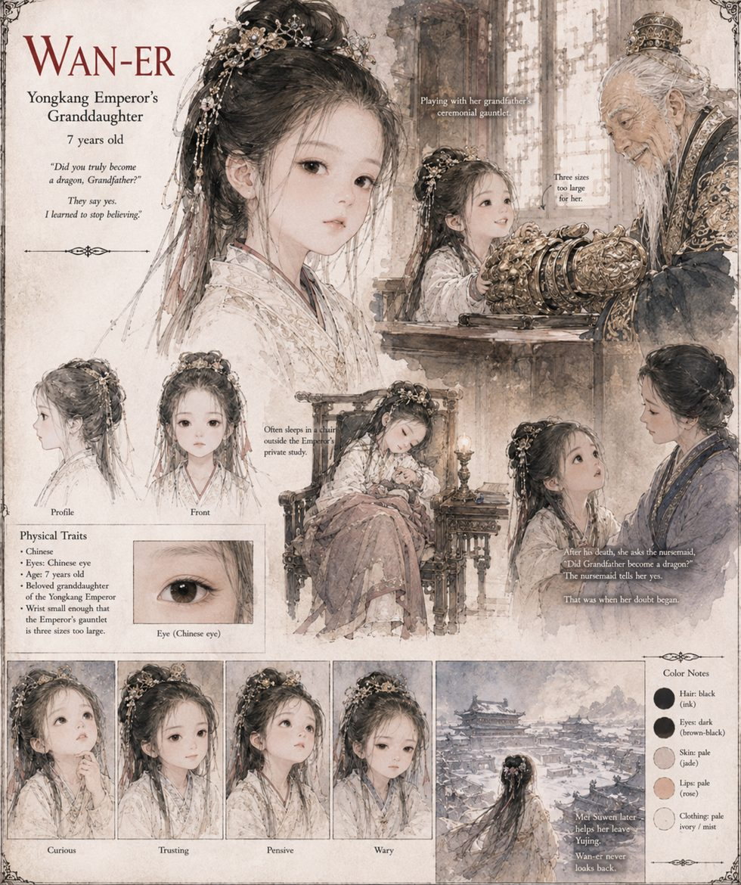

Wan-er
The Yongkang Emperor's granddaughter · Prince Yue's daughter · 7 years old
Prince Yue's daughter, seven years old at the Solstice, beloved of her grandfather and, by a standing exception to protocol no one has the courage to revoke, allowed to fall asleep most nights in a chair outside his private study. On the last evening of his life she tries on his ceremonial gauntlets, three sizes too large for her wrist, while he tells her the old story about the carp that swam upstream until it became a dragon. She does not understand that she is being given something. She understands only that her grandfather is, for once, not busy.
When he dies in the water, a nursemaid not equal to the question tells her that yes, he became a dragon, because it is the only answer that does not require either of them to know anything true. It is a kind lie, and it is the moment she stops believing adults. During the siege Mei Suwen walks her to the western postern three evenings out of every seven, and she quietly rewrites the carp's ending so that it simply swims somewhere the river cannot follow. Years later, in a teahouse, she asks Mei one question — whether she thinks he became one — and is told, for the first time, an honest I do not know.
“Did you truly become a dragon, Grandfather?”
Appears In

Related Subjects


Related Records

The night before the Trial, the Yongkang Emperor lets Wan-er try on his gauntlets.

Wan-er waits outside her grandfather's study, the evening no one comes to find her as usual.

Mei Suwen walks Wan-er to the western postern, three evenings out of every seven.

Mei Suwen and Wan-er, years later, in a teahouse two provinces west of Yujing — in the one account no chronicle confirms.